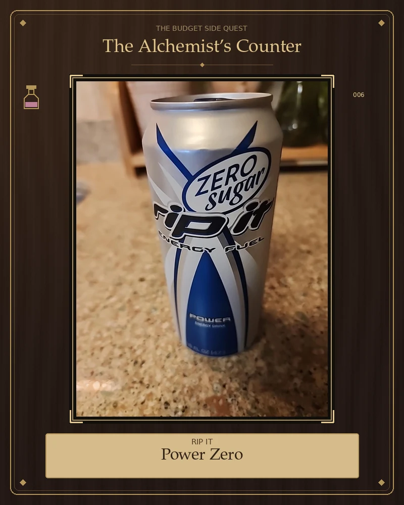

🪙 $1.50 · Dollar TreeRip It Power Zero Sugar
Would buy againSubtle, likely blueberry-ish berry flavor. Good energy by the end of a productive day, though I can’t say how much the drink contributed.
Open field notes
Purchase: Dollar Tree, $1.50.
Drinking window: 10:30 AM–approximately 2:00 PM (3½ hours).
Flavor: Subtle artificial berry, possibly blueberry. Pleasant and not overly sweet; the can did not clearly identify the flavor.
Energy: A slight head-swirling sensation after the first few sips. After breakfast and a short arm workout, I wasn’t sure how much it was doing. Looking back in the late afternoon, I felt it had provided good energy during a productive day that included building a website. That is an experience, not proof of causation.
Comfort: No stomach issues reported; stomach comfort was not specifically assessed.
Label: 16 fl oz; 10 calories; 0 g sugar; 3 g carbohydrates; 190 mg sodium; 31 mg potassium; vitamin C 144 mg; B6 4 mg; B12 20 mcg. Caffeine quantity not verified.
Verdict: “Good drink; I enjoyed it!” Would drink again.